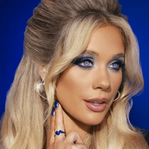
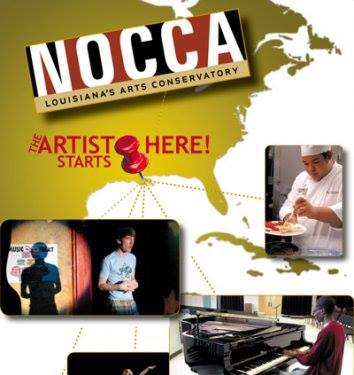

Timeline
Sr Manager, International Commercial Marketing
Warner Music Group | ADA
April 2026 – Present
- Develop global trade approaches to improve streaming consumption for ADA’s US repertoire in external markets.
- Build and manage relationships with affiliate label commerce teams at ADA/WMG and international DSP partners.
Independent Spotify Playlisting
Personal Project
2025
- Curated an independent playlist following of over 50,000, generating eight figure stream counts using data analysis via Spotify's API.
Manager, US Editorial and Marketing
Warner Music Group
Feb 2025 – April 2026
- Led the Topsify US team on cross-functional marketing campaign execution in partnership with WMG label teams (Atlantic Records, ADA, etc.), artist management, and external partners.
- Automated playlist research via Python/Spotify API, reducing manual workflow by 70%.
- Aligned global viral marketing strategies with local market insights.
- Developed playlist marketing strategies for superstar acts like Bruno Mars, Benson Boone, Cardi B, Madonna and more.

Bruno Mars: Designed playlist strategy, driving 10M+ streams and 60k follower growth during album release week

Pride Party: Led integrated marketing partnerships with WeHo Pride and LadyLand festival

Madonna: Optimized artist playlists in collaboration with management
Sombr: Delivered the streams necessary to secure the Spotify Global #1 via Topsify editorial
Coordinator, Partner Relations
Sony Music Entertainment
July 2024 – Dec 2024
- Led cross-label DSP partnerships, including Fitness, Social, Gaming, and Jukebox accounts for Legacy, Columbia, and Arista Records.
- Orchestrated features for priority releases through strategic partner pitching.

Addison Rae: Pitched and landed four Apple editorial placements for "Aquamarine," including New Music Daily and A-List Pop

Tyler, The Creator: Late delivery logistics and pitching

Leon Bridges: Coordinated assets for Apple Music Zane Lowe interview
BUNT.: Arranged a PlayStation playlist takeover which featured globally across PS4 and PS5 systems
Coordinator, Central Commercial Partnerships
Sony Music Entertainment
Jan 2023 – July 2024
- Analyzed streaming consumption data via Python and Excel for growth opportunities.
- Devised marketing strategies for the Filtr playlisting brand, increasing streaming consumption by up to 300% YoY.

Tyla: Secured artist participation to promote a brand new Filtr editorial playlist, Afro Music

Beyoncé: Coordinated DSP updates with Columbia Records

Travis Scott: Managed late delivery logistics with Epic Records

Megan Moroney: Secured artist participation in a cross-promotional Filtr marketing campaign
Data Analytics Certificate
Columbia University
2022
- Five month intensive program, covering SQL, Python, Tableau, and more.
Coordinator, Digital Marketing
Mascot Label Group
April 2021 – Jan 2023
- Designed media aligned with the artist's creative vision.
- Managed international digital campaigns and improved advertising CTRs by 20%.
- Drove follower growth of up to 370% through social platform best practices.

Eric Gales: Led a digital FYC campaign which resulted in Gales' first Grammy nomination

Beth Hart: Developed digital rollout plan which saw TikTok followers surge from 27k to 100k

Crobot: Digital asset creation (Spotify canvases, social graphics and cutdowns)
Assistant, Marketing
Every Life Well
July 2019 – Mar 2021
- Assessed SEO marketing growth potential for products.
- Collaborated with product management to build and launch a new Shopify webstore.
B.A. Plan II Honors & Government
University of Texas at Austin
2015 - 2019
Senior thesis, "How The Spotify Streaming Model Affects the Modern American Musician."

Intern, Music
musx
Feb 2017 – May 2017
Developed playlist editorial and expanded marketing analytics.

Issue, Life and Arts
The Daily Texan
Jan 2016 – May 2016
Published album reviews and interviews for the UT Austin student publication.

Classical and Jazz Trombone
New Orleans Center for Creative Arts
2011 - 2015
2015 recepient of Presidential Honors and the Moses S. Hogan award for excellence in Classical Instrumental performance.
iPhone Concert Photography Gallery